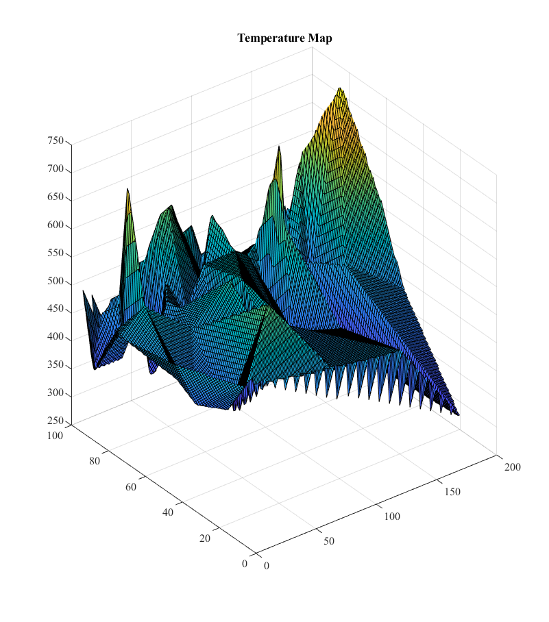

Contents
Assignment 3
Monte-Carlo/Finite Difference Method
Author: Ragini Bakshi, March 2021
set(0,'DefaultFigureWindowStyle','docked') set(0, 'defaultaxesfontsize', 12) set(0, 'defaultaxesfontname', 'Times New Roman') set(0, 'DefaultLineLineWidth',2); clear all close all % Constants taken directly from 4700 Repo DriftDiffTran global C C.q_0 = 1.60217653e-19; % electron charge C.hb = 1.054571596e-34; % Dirac constant C.h = C.hb*2*pi; % Planck constant C.m_0 = 9.10938215e-31; % resting electron mass in kg C.kb = 1.3806504e-23; % Boltzmann constant C.eps_0 = 8.854187817e-12; % vacuum permittivity C.Mun_0 = 1.2566370614e-6; % vacuum permeability C.c = 299792458; % speed of light C.m_n = 0.26*C.m_0; % effective mass of electrons in kg % Simulation Parameters width = 200e-9; % nm goes along x axis height = 100e-9; % nm goes along y axis Temp = 300; % Temp in K tmn = 0.2e-13; % mean time between collisions C.Vt = C.kb*Temp/C.q_0;
Part 1: Modified Monte-Carlo simulator without bottle-neck
V = 0.1V is applied across the x axis of the semiconductor Assuming the Electric field is constant over the semiconductor:
elec_field_x = 1 / width % in V/m elec_field_y = 0.1/width; % no electric field in y-direction yet % b. Force on each electron is also constant because of constant E force_on_e_x = C.q_0*elec_field_x % in kg-m/s^2 force_on_e_y = C.q_0*elec_field_y % in kg-m/s^2 % c. Acceleration on the electrons: a = Force/effective mass of electron acc_on_e_x = force_on_e_x / C.m_n % in m/s^2 acc_on_e_y = force_on_e_y / C.m_n % in m/s^2 % d. The relationship between electron drift current density and average % carrier velocity is given by: % J[drift current density] = q [e- charge] * electron concentration * v_th [thermal velocity] C.conc = 10e15*100*100; % given electron concentration in m^-2 v_th = sqrt((2*C.kb*Temp)/C.m_n); % Thermal Velocity in m/s MFP = v_th*tmn; % mean free path % Mean Free Path is the average free path an electron travels before it % experiences scattering due to background features such as impurities, % silicon imperfections, etc. % 2D plot that demonstrates their curved trajectories: %%%%%%%%%%%%%%%%%%%%%%%% INSERT SIM from A1 HERE %%%%%%%%%%%%%%%%%%%%%%%%%%%%%%%%%%%%%% % Part 1 Simulation: Modified Assignment 1 % Part 1 Parameters steps = 100; % number of steps total_elec = 100; % total number of electrons simulated n_elec = 10; % number of electrons plotted dt = width/(v_th*100); % spacial time step is smaller than 1/100 of region size path_pinks = hsv(n_elec); % colours for each path/trajectory %Scattering probability setup nominal_prob_scat = 1 - (exp(-1*dt/tmn)); % remains constant, is defined by exponential scattering probability equation prob_at_each_electron = rand(total_elec,1); % is different for each electron % Assign position and velocity to each electron in the array for i = 1:total_elec x = rand(total_elec,1)*width; % x position y = rand(total_elec,1)*height; % y position x_vel_row(i) = sqrt(C.kb*Temp/C.m_0)+randn()*v_th; % x velocity with mean v_th and std deviation sqrt(kT/m) y_vel_row(i) = sqrt(C.kb*Temp/C.m_0)+randn()*v_th; % x velocity with mean v_th and std deviation sqrt(kT/m) end % Convert X_vel_row and Y_vel_row into columns for future vector operations % and add new x velocity component due to electric field x_vel = x_vel_row' + acc_on_e_x*dt; y_vel = y_vel_row' + acc_on_e_y*dt; % time t for temperature t = [1:steps].*dt; for step = 1:steps x_old(1) = x(1); y_old(1) = y(1)'; Si_temp(1) = 300; for j = 1:total_elec %Used for plotting x_old(j) = x(j); y_old(j) = y(j); dontplot_2 = false; % if it wraps around edges, dont plot the line % scatter if applicable if(nominal_prob_scat > 2*rand()) % reset x and y velocities to random numbers x_vel(j) = sqrt(C.kb*Temp/C.m_0)+randn()*v_th; y_vel(j) = sqrt(C.kb*Temp/C.m_0)+randn()*v_th; end % Move the electron if its ok if y(j) < 0 % its going past the bottom edge; reflect it y_vel(j) = y_vel(j)*(-1); y(j) = 0; x(j) = x(j) + x_vel(j)*dt + 0.5*acc_on_e_x*dt*dt; x_vel(j) = x_vel(j) + acc_on_e_x*dt; y_vel(j) = y_vel(j) + acc_on_e_y*dt; elseif y(j) > height % its going past the top edge; reflect it y_vel(j) = y_vel(j)*(-1) + acc_on_e_y*dt; x_vel(j) = x_vel(j) + acc_on_e_x*dt; y(j) = height; x(j) = x(j) + x_vel(j)*dt; elseif x(j) < 0 % its going past the left edge; wrap it to right x(j) = width; if y_vel(j) > 0 y(j) = y(j) + 2e-9; else y(j) = y(j) - 2e-9; end dontplot_2 = true; x_vel(j) = x_vel(j) + acc_on_e_x*dt; y_vel(j) = y_vel(j) + acc_on_e_y*dt; elseif x(j) > width % its going past the right edge; wrap it to left x(j) = 0; if y_vel(j) > 0 y(j) = y(j) + 2e-9; else y(j) = y(j) - 2e-9; end dontplot_2 = true; x_vel(j) = x_vel(j) + acc_on_e_x*dt; y_vel(j) = y_vel(j) + acc_on_e_y*dt; else % update position and velocities x(j) = x(j) + x_vel(j)*dt + 0.5*acc_on_e_x*dt*dt; y(j) = y(j) + y_vel(j)*dt + 0.5*acc_on_e_y*dt*dt; x_vel(j) = x_vel(j) + acc_on_e_x*dt; y_vel(j) = y_vel(j) + acc_on_e_y*dt; end if(j < n_elec && dontplot_2 == false) figure(1) plot([x_old(j) x(j)],[y_old(j) y(j)],'Color', path_pinks(j,:)) title('Electron Trajectories'); axis([0 width 0 height]) xlabel('Width') ylabel('Length') hold on pause(0.01) end end x_v_mean(step) = mean(x_vel); J(step) = C.conc*C.q_0*x_v_mean(step); Si_temp(step) = (mean((sum(x_vel).^2)+ sum(y_vel).^2))*C.m_n / (C.kb*2*10^4); end % Plot of current over time in the x direction: figure(2) plot(t,J) title('Drift Current Density vs Time in the x direction') xlabel('Time (s)') ylabel('Drift Current Density') % figure(3) % plot(Si_temp) % hold on; % title('Temp vs Time') % xlabel('Time (s)') % ylabel('Temp (K)') % e. Density and temperature maps: figure(3) [gridX, gridY] = meshgrid(linspace(min(x), max(x), 200), linspace(min(y), max(y), 100)); surf(griddata(x, y, Si_temp, gridX, gridY)); title('Temperature Map') figure(4) [grid_curr_X, grid_curr_Y] = meshgrid(linspace(0, width, 200), linspace(0, height, 100)); surf(griddata(x, y, J, grid_curr_X, grid_curr_Y)); title('Drift Current Density Map');
elec_field_x =
5000000
force_on_e_x =
8.0109e-13
force_on_e_y =
8.0109e-14
acc_on_e_x =
3.3823e+18
acc_on_e_y =
3.3823e+17
 Part 2: Modified Finite Difference Method
Aim here is to calculate an Electric Field and use as input to Monte-Carlo with bottleneck
% a. Potential with the bottle-neck inserted: part = 2; % saddle shape nx = 200; ny = 100; [Curr, Vmap, Ex, Ey, eFlowx, eFlowy ] = ass_3_Solve(nx, ny, 100, 10e-9, [0.8 0], part); force_in_x = Ex*1e9*C.q_0; acc_in_x = force_in_x ./ C.m_n; force_in_y = Ey*1e9*C.q_0; acc_in_y = force_in_y ./ C.m_n; % Plot boxes Boxes = {}; Boxes{1}.X = [0.8 1.2]*1e-7; Boxes{1}.Y = [0.6 1.0]*1e-7; Boxes{1}.BC = 's'; Boxes{2}.X = [0.8 1.2]*1e-7; Boxes{2}.Y = [0.0 0.4]*1e-7; Boxes{2}.BC = 's'; % % Width = 100; % Height = 50; % % x = linspace(-Width/2, Width/2, nx); % y = linspace(0, Height, ny); % V = zeros(nx, ny); % % figure(6) % view(45, 45) % b = Width/2; % a = Height; % 3D plot of potential = surface plot of V(x,y) % 2D electric field vector plot using quiver figure(6) view(45, 45) subplot(2,1,1), H = surf(Vmap'); set(H, 'linestyle', 'none'); title('3D plot of potential = surface plot of V(x,y)') view(0,90) subplot(2,1,2),quiver(Ex', Ey'); axis([0 nx 0 ny]); title('2D electric field vector plot using quiver'); % b. Electric Field potential calculation done in function ass_3_Solve % c. Using this field as input to MC in part 1 and the resultant 2D plot of % particle trajectories under the new Electric field figure(7) plot([Boxes{1}.X(1), Boxes{1}.X(1)], [Boxes{1}.Y], 'r'); hold on; plot([Boxes{1}.X(2), Boxes{2}.X(2)], [Boxes{1}.Y], 'r'); hold on; plot([Boxes{1}.X(2), Boxes{2}.X(2)], [Boxes{2}.Y], 'r'); hold on; plot([Boxes{1}.X(1), Boxes{1}.X(1)], [Boxes{2}.Y], 'r'); hold on; plot([Boxes{1}.X(1), Boxes{1}.X(2)], [Boxes{1}.Y(1), Boxes{1}.Y(1)], 'r'); hold on; plot([Boxes{2}.X(1), Boxes{2}.X(2)], [Boxes{2}.Y(2), Boxes{2}.Y(2)], 'r'); hold on; axis([0 width 0 height]); title('Location of boxes') hold on; %%%%%%%%%%%%%%%%%%%%%%%% INSERT SIM from A1 HERE %%%%%%%%%%%%%%%%%%%%%%%%%%%%%%%%%%%%%% % Part 2 Simulation: Modified Assignment 1 + 2 % Part 2 Parameters steps = 100; % number of steps total_elec = 100; % total number of electrons simulated n_elec = 10; % number of electrons plotted dt = width/(v_th*100); % spacial time step is smaller than 1/100 of region size path_pinks = hsv(n_elec); % colours for each path/trajectory %Scattering probability setup nominal_prob_scat = 1 - (exp(-1*dt/tmn)); % remains constant, is defined by exponential scattering probability equation % Assign position and velocity to each electron in the array for i = 1:total_elec x_position = rand(total_elec,1)*width; % x position y_position = rand(total_elec,1)*height; % y position xlim = (x_position(i) <= 1.2*10-7) && (x_position(i) >= 0.8*10-7); ylim = (y_position(i) <= 0.4*10-7) || (y_position(i) >= 0.6*10-7); while(xlim && ylim) %while starting within box, rerandomize x_position = rand(total_elec,1)*width; % x position y_position = rand(total_elec,1)*height; % y position end x_vel_roww(i) = sqrt(C.kb*Temp/C.m_0)+randn()*v_th; % x velocity with mean v_th and std deviation sqrt(kT/m) y_vel_roww(i) = sqrt(C.kb*Temp/C.m_0)+randn()*v_th; % x velocity with mean v_th and std deviation sqrt(kT/m) end % Convert X_vel_row and Y_vel_row into columns for future vector operations % and add new x velocity component due to electric field x_velocity = x_vel_roww'; %+ acc_in_x*dt; y_velocity = y_vel_roww'; %+ acc_in_y*dt; % time t for temperature t = 0; t = [1:steps].*dt; step = 0; % reset step x_old = zeros(1,steps); y_old = zeros(1,steps); Si_temp = zeros(1,steps); for step = 1:steps x_old(1) = x_position(1); y_old(1) = y_position(1)'; Si_temp(1) = 300; for j = 1:total_elec % logical limits for boxes y_lim_2 = (y_position >= 0.6*10^-7); y_lim_1 = (y_position <= 0.4*10^-7); x_lim_l = (x_position >= 0.8*10^-7); x_lim_r = (x_position <= 1.2*10^-7); %Used for plotting x_old(j) = x_position(j); y_old(j) = y_position(j); dontplot_2 = false; % if it wraps around edges, dont plot the line % scatter if applicable if(nominal_prob_scat > 2*rand()) % reset x and y velocities to random numbers x_velocity(j) = sqrt(C.kb*Temp/C.m_0)+randn()*v_th; y_velocity(j) = sqrt(C.kb*Temp/C.m_0)+randn()*v_th; end % Move the electron if its ok if y_position(j) < 0 % its going past the bottom edge; reflect it y_velocity(j) = y_velocity(j)*(-1); y_position(j) = 0; x_position(j) = x_position(j) + x_velocity(j)*dt + 0.5*acc_in_x(i,j)*dt*dt; x_velocity(j) = x_velocity(j) + acc_in_x(i,j)*dt; y_velocity(j) = y_velocity(j) + acc_in_y(i,j)*dt; %elseif (top edge of bottom box) % elseif (y_lim_1 && x_lim_r && x_lim_l) % y_velocity = -1*y_velocity(j); % %x_velocity = unchanged % x_position = x_position(j) + x_velocity(j)*dt + 0.5*acc_in_x(i,j)*dt*dt; % y_position = 0.4*10^-7; elseif y(j) > height % its going past the top edge; reflect it y_velocity(j) = y_velocity(j)*(-1) + acc_in_y(i,j)*dt; x_velocity(j) = x_velocity(j) + acc_in_x(i,j)*dt; y_position(j) = height; x_position(j) = x_position(j) + x_velocity(j)*dt; % %elseif (bottom edge of top box) % elseif (y_lim_2 && x_lim_r && x_lim_l) % y_velocity = -1*y_velocity(j); % %x_velocity = % x_position = x_position(j) + x_velocity(j)*dt + 0.5*acc_in_x(i,j)*dt*dt; % y_position = 0.6*10^-7; % %elseif left edges of boxes % elseif (y_position <= 0.4*10^-7 && (x_position <= 1.2*10-7 && x_position >= 0.8*10^-7)) % y_velocity = % x_velocity = % x_position = % y_position = % % %elseif right edges of boxes % elseif (y_position <= 0.4*10^-7 && (x_position <= 1.2*10-7 && x_position >= 0.8*10^-7)) % y_velocity = % x_velocity = % x_position = % y_position = elseif x_position(j) < 0 % its going past the left edge; wrap it to right x_position(j) = width; if y_velocity(j) > 0 y_position(j) = y_position(j) + 2e-9; else y_position(j) = y_position(j) - 2e-9; end dontplot_2 = true; x_velocity(j) = x_velocity(j) + acc_in_x(i,j)*dt; y_velocity(j) = y_velocity(j) + acc_in_y(i,j)*dt; elseif x_position(j) > width % its going past the right edge; wrap it to left x_position(j) = 0; if y_velocity(j) > 0 y_position(j) = y_position(j) + 2e-9; else y_position(j) = y_position(j) - 2e-9; end dontplot_2 = true; x_velocity(j) = x_velocity(j) + acc_in_x(i,j)*dt; y_velocity(j) = y_velocity(j) + acc_in_y(i,j)*dt; else % update position and velocities x_position(j) = x_position(j) + x_velocity(j)*dt + 0.5*acc_in_y(i,j)*dt*dt; y_position(j) = y_position(j) + y_velocity(j)*dt + 0.5*acc_in_y(i,j)*dt*dt; x_velocity(j) = x_velocity(j) + acc_in_x(i,j)*dt; y_velocity(j) = y_velocity(j) + acc_in_y(i,j)*dt; end if(j < n_elec && dontplot_2 == false) figure(8) plot([x_old(j) x(j)],[y_old(j) y(j)],'Color', path_pinks(j,:)) title('Electron Trajectories'); axis([0 width 0 height]) xlabel('Width') ylabel('Length') hold on pause(0.01) end end x_mean(step) = mean(x_velocity); J_2(step) = C.conc*C.q_0*x_mean(step); Si_temp(step) = (mean((sum(x_vel).^2)+ sum(y_vel).^2))*C.m_n / (C.kb*2*10^4); end
Part 3: Device investigation and parameter extraction
a. Density Map Plot at 0.8V field
% b. Average current at different bottleneck widths (plot and calculaion) % c. To make this simulation more accurate, the most obvious way would be to increase the sample size % of electrons being simulated, decrease the dt, and simulate for longer.